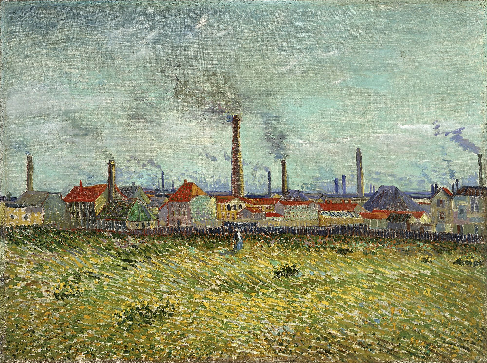

Societal Impacts Research on AI
Studying the societal impacts of advanced AI, before and after AGI
People from 60+ universities and organizations have expressed interest in SIRA
- University of Chicago
- Stanford
- Yale
- Princeton
- Columbia
- UC Berkeley
- Cornell
- University of Cambridge
- LSE
- UCL
- University of Toronto
- Johns Hopkins
- Carnegie Mellon
- Georgetown
- University of Michigan
- NYU
- UCLA
- McGill
- University of Edinburgh
- University of Amsterdam
- Erasmus University Rotterdam
- Hertie School
- University of Copenhagen
- TU Munich
- University of Hong Kong
- IIT Madras
- UT Austin
- Georgia Tech
- University of Washington
- Tufts
- Boston University
- Brandeis
- Purdue
- UNC Chapel Hill
- UC Irvine
- UIUC
- University of Pittsburgh
- UBC
- University of Bristol
- University of Manchester
- Stockholm School of Economics
- Central European University
- University of Graz
- Saarland University
- Masaryk University
- VU Amsterdam
- Amsterdam University of Applied Sciences
- The Open University
- FernUniversität in Hagen
- Stellenbosch University
- University of Port Harcourt
- University of Buenos Aires
- Universidad de los Andes
- Universidad Nacional de Córdoba
- UNSAM
- Universidad Favaloro
- VNU Hanoi
- University of Victoria
- Rollins College
- OECD
- The Alan Turing Institute
- Max Planck Institute for Human Development
- Meta
- SPAR
SIRA’s mission is to discover and publish evidence about the societal impacts of advanced AI systems, the associated risks, and the effectiveness of present and future interventions, so humanity can navigate the transition to AGI and thrive in the world that follows.
What we do
SIRA studies the societal impacts of advanced AI systems to understand whether society is prepared for the transition to AGI and the world that follows. We publish research on AI’s present and future effects and risk assessments so that the public, governments, and companies can make informed decisions. More about SIRA
What we study
How AI is changing the foundations of society: how people work and earn, how they think and make decisions, how they relate to one another and find meaning, how safe they are from fraud and misuse, how institutions govern, how power and wealth are distributed, and how countries relate to one another. We track how widely AI is being adopted, study effects already underway, and project them forward to the transition to AGI and beyond, asking which social structures are likely to bend, which might break, and what would help them adapt.
In-house research
As SIRA grows, we are building an in-house research team to lead our assessments and pursue the questions we judge most urgent. Together with our fellows, they build an evidence base the public, governments, and companies can use to prepare for what comes next. Express interest here
Research fellowship
Our fellowship brings a small cohort of exceptional early-career researchers from any discipline into SIRA’s focus areas each year, pairing them with mentors who already study these questions. Learn more about the fellowship
Get involved
Fellows
Exceptional early-career researchers from any discipline who want to study AI’s societal impacts.
Express interest →Mentors
Researchers already studying AI’s effects on society, in academia, industry, or government.
Offer to mentor →Host organizations
Fellowships or co-working spaces that could host SIRA as a research stream or standalone program.
Email us →FAQ
What does SIRA do?
SIRA is a research organization that studies the societal impacts of advanced AI, before and after AGI. We publish research and risk assessments on how AI is changing work, beliefs and decisions, relationships, institutions, and the distribution of power, so the public, governments, and companies can make informed decisions. We do this through an in-house research team, which we are building now, and a research fellowship for early-career researchers. See our focus areas.
What counts as a societal impact?
Any lasting change in how people live, work, think, or govern themselves that comes from AI being used widely. That includes effects on individuals, such as how people learn or make decisions, and effects on whole systems, such as labor markets, democratic institutions, or the balance of power between countries. We focus on these effects rather than on what AI systems can do in a lab.
How is SIRA different from other AI safety organizations?
Much AI safety research focuses on the systems themselves: what models can do, and how to make them safe. SIRA focuses on what happens when those systems are used across society, from individual decisions to effects on work, institutions, and power. We look across all models rather than one, and take a deliberately broad view of societal impact.
How is SIRA different from AI policy or governance work?
Policy and governance work asks “what rules should govern this?”: it designs regulation, evaluates compliance, and advises decision-makers. SIRA asks “what is actually happening, and why?”: we study how AI is changing people, institutions, and society. Where a policy project might ask what disclosure rules should apply to AI-generated political messages, a SIRA project would ask how much those messages actually shift people’s views, and who is most persuadable. Our findings are meant to inform policy, but we don’t draft regulation.
What kind of research does SIRA do?
Empirical and theoretical research from any discipline: experiments, surveys, interviews, ethnography, and quantitative modeling, as well as formal models, conceptual analysis, and theory building.
Where is SIRA now?
SIRA is in its early stages. We are building our in-house research team, running a small pilot, and preparing a first fellowship cohort for Summer 2027. You can read the original proposal on LessWrong.
How is SIRA funded?
We are raising our first funding from foundations and individual donors, for both our research and the fellowship. If you are a funder interested in supporting SIRA, email contact@sira-project.org.
How can I get involved?
Researchers can express interest in our research team. Early-career researchers can apply to the fellowship, and established researchers can mentor fellows. Funders and partner organizations can email contact@sira-project.org.
How can I give feedback or stay updated?
Comment on the proposal on LessWrong or email contact@sira-project.org; we are actively looking for critique. To hear about our work, fill out an interest form and follow SIRA on LinkedIn.